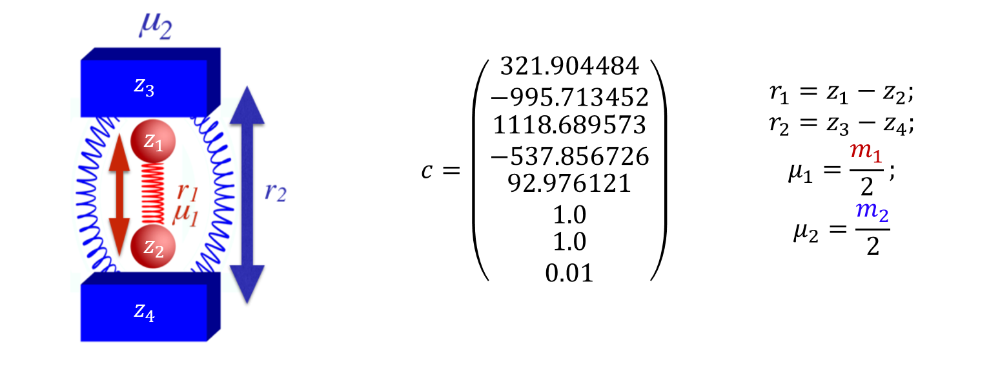

---
redirect_from:
  - "/act3/system-bath1/main-jekyll"
title: |-
  N-DoF System-Bath Model 1
pagenum: 27
prev_page:
  url: /act3/system_bath2/system_bath-jekyll-bib.html
next_page:
  url: 
suffix: .md
search: system r ld point t plots reactive space bath ds dof tau fig initial mathbf value left right v not potential x position method obtained model saddle our line phase energy conditions close trajectories equation where momenta values minimum configurational po problem figures mu c reduced different chemical however systems pods shown location also represents png figcaption style text align centerfont size pxbfig bem em figcaptiona id hr p between full those ldfirst surface mass begin frac sum int dt trajectory methodology red calculations both file mybib reaction using described its study j label end second contours leq action n

comment: "***PROGRAMMATICALLY GENERATED, DO NOT EDIT. SEE ORIGINAL FILES IN /content***"
---

    <main class="jupyter-page">
    <div id="page-info"><div id="page-title">N-DoF System-Bath Model 1</div>
</div>
    <div class="jb_cell">

<div class="cell border-box-sizing text_cell rendered"><div class="inner_cell">
<div class="text_cell_render border-box-sizing rendered_html">
<h1 id="High-degree-of-freedom-system-bath-model-(a-prelude)">High degree-of-freedom system-bath model (a prelude)<a class="anchor-link" href="#High-degree-of-freedom-system-bath-model-(a-prelude)"> </a></h1><h2 id="Introduction">Introduction<a class="anchor-link" href="#Introduction"> </a></h2><p>Locating the Dividing Surface (DS) in chemical reactions has been the focus of many rate constant calculations both for reactions in solution and in vacuum thanks to the Transition State Theory; a classical theory developed by Wigner, Eyring, Evans and Polanyi;{% cite Wigner1932 Eyring1935 Polanyi1935 Eyring1941 --file myBib %} that calculates the rate of the reaction as the equilibrium flux of reactive trajectories through that DS.</p>
<p>However, the construction of the DS for 2 DoF systems using the Lyapunov family of unstable POs was presented in a series of papers by Pollak, Pechukas, and Child in the late 1970's to early 1980's.{% cite PechukasPollak1977 PollakPechukas1978 PechukasPollak1979 PollakChild1980 Pechukas1982 --file myBib %} The resulting Periodic Orbit Dividing Surface (PODS) is a hypersurface in phase space arising from the unstable PO. It has been shown to have the required no-recrossing properties described above. Of particular interest was the recognition that as the total energy of trajectories increased, the location of the PODS would change, and that, in general, its projection onto the PES did not need to pass through the index one saddle point that is considered to be the location of the Transition Structure in many chemical models. In the present chapter, we emphasize that it is not only energy which can cause the PODS to move, but at least in some models, its location may also be mass dependent. This feature is of particular relevance to the solvent-derived inertial barrier mentioned above.</p>
<p>(WRITE THE OBJECTIVE OT THE CHAPTER)</p>
<h2 id="Development-of-the-Problem">Development of the Problem<a class="anchor-link" href="#Development-of-the-Problem"> </a></h2><p>Our model potential (see <a href="#ModelFig">fig:1</a>) has been introduced in act 2 and consists of a one-dimensional double well oscillator that represents the reactive system, coupled to a one-dimensional harmonic oscillator representing the bath. To facilitat the reading we will reintroduce the details of the model here.</p>
<p></p>
<p><figcaption style="text-align:center;font-size:14px"><b>fig:1 </b><em> Schematic representation (left) and definitions (right) of the model system used in our study. </em></figcaption><a id="ModelFig"></a></p>
<hr>

<p>The Hamiltonian that describes the system is as follows:</p>
\begin{equation}
H(\mathbf{x})=H(\mathbf{r},\mathbf{p})=\frac{p_1^2}{2\mu_1}+\frac{p_2^2}{2\mu_2}+\sum_{j=1}^{5} c_j r_1^{j-1}+c_6 (c_7-r_2 )^2+\frac{c_8}{(r_2-r_1 )^{12}}
\label{modelEq}
\end{equation}<p>where the subscripts 1 and 2 refer to the reactive system and bath oscillators respectively; $r=(r_1,r_2 )$ is the position of the two oscillators and $p=(p_1,p_2 )$ represents the conjugate momenta. The reduced mass of each oscillator is $\mu$, and $c$ are coefficients whose values are listed in <a href="#ModelFig">fig:1</a>. The potential energy can be divided between $V_1 = \sum_{j=1}^{5} c_j r_1^{j-1}$ as the potential of the reactive system, $V_2=c_6 (c_7-r_2 )^2$ as the potential of the bath and $V_{int}=c_8/(r_2-r_1 )^{-12}$ as the interaction between the two; hence $V=V_1+V_2+V_{int}$. The potential of the reactant, shown in <a href="#PESFig">fig:2</a>, is chosen to have a minimum at $r_1=1.0$ and a second one at $r_1=2.0$ , with respective potential energies $V_1=0.0$ and $V_1=-10$. The maximum energy is at $r_1=1.33867$ and $V_1=2.0$. The full potential, shown in <a href="#PESFig">fig:2</a>, has a saddle point at $r_1=1.36561$ and $r_2=2.161769$ at $V=3.47291$. The "reactant" minimum occurs at $r_1 = 0.98779$, $r_2 = 1.80661$, $V = 0.77040$. The "product" minimum occurs at $r_1 = 1.98517$, $r_2 = 2.75642$, $V = -6.66284$.</p>
<p></p>
<p><figcaption style="text-align:center;font-size:14px"><b>fig:2 </b><em> (Left) Reactive system's potential energy profile. (Right) Contours of the full potential energy surface. The contours are depicted in the $-7 \leq V \leq 6$ interval. </em></figcaption><a id="PESFig"></a></p>
<hr>

<h2 id="Revealing-Phase-Space-Structures">Revealing Phase Space Structures<a class="anchor-link" href="#Revealing-Phase-Space-Structures"> </a></h2><h3 id="Method-1---Spatial-Lagrangian-Descriptors-based-on-Action-Integrals">Method 1 - Spatial Lagrangian Descriptors based on Action Integrals<a class="anchor-link" href="#Method-1---Spatial-Lagrangian-Descriptors-based-on-Action-Integrals"> </a></h3><p>Lagrangian descriptors are calculated on a chosen phase space grid of initial conditions $\mathbf{x_0}$ at time $t = t_0$, evolving the trajectories for a fixed forward and backward integration time $\tau$. The general expression of LDs is:</p>
\begin{equation}
M\left(\mathbf{x_0},t_0,\tau\right) = \int_{t-\tau}^{t+\tau} \mathcal{F}\left(\mathbf{x}(t);\mathbf{x}_0\right) dt
\label{LDEq}
\end{equation}<p>where $\mathcal{F}\left(\mathbf{x}(t);\mathbf{x}_0\right)$ is a positive and bounded scalar representing a geometrical or physical property of a trajectory with initial conditions $\mathbf{x_0}$ and initial time $t_0$; that is integrated over the time interval $[t_0-\tau, t_0+\tau]$. Because we are interested in the DS, and we know that the action is a minimum on its vicinity we will be using an action-like value of the form:</p>
\begin{equation}
\mathcal{F}\left(\mathbf{x}(t);\mathbf{x}_0\right) = \sum_{i=1}^{N}\left(p_i \frac{dx_i}{dt}\right)^{1/2}
\label{actionLikeEQ}
\end{equation}<p>where $N$ is the number of DoF, $p_i$ and $x_i$ are respectively the momenta and position of the DoF $i$. It is interesting to note that, by finding the modulus of each term separately, we could examine their effect on the LD independently, although that issue is not explored in the present paper. In this case the LD will be:</p>
\begin{equation}
M\left(\mathbf{x_0},t_0,\tau\right) = \int_{t-\tau}^{t+\tau} \sum_{i=1}^{N}\left(p_i \frac{dx_i}{dt}\right)^{1/2} = \int_{t-\tau}^{t+\tau} \sum_{i=1}^{N}\left(v_i^2 m_i\right)^{1/2} dt
\label{LDEq2}
\end{equation}<p>The application of LD to higher DoF is already being studied in depth.{% cite NaikSWigginsPysRevE2019 naik2019finding --file myBib %} However, these studies revolve around systems with a known Hamiltonian, which is not the case for many chemical processes. Also, the control of every DoF to create the required initial conditions becomes unbearable as soon as you convert the system into a full atomistic model. Therefore, if we want to calculate the LD for complex chemical systems we need a different approach that is described in the following section.
As in our previous study the mass of the reactive system ($\mu_1$) is set to a value of 1 and the reduced mass of the bath ($\mu_2$) will be given values of 0.1, 1 or 10. But in this case we will be using the LD methodology to locate the DS and the $\tau$ value will be 1 for $\mu_2=0.1, 1$ and 2 for $\mu_2=10$.</p>
<h3 id="Method-2---Planar-Lagrangian-Descriptors-based-on-Action-Integrals">Method 2 - Planar Lagrangian Descriptors based on Action Integrals<a class="anchor-link" href="#Method-2---Planar-Lagrangian-Descriptors-based-on-Action-Integrals"> </a></h3><p>The main idea of this method comes from a solution that has been applied in almost every studied chemical reaction. This is, the reduction of the system to a 1 or 2 DoF problem using a Reaction Coordinate (RC). However, as in those chemical studies, the equations of motion are not reduced to a single coordinate but instead the RC is used as a measure of the location of the system at each timestep.</p>
<p>The method was developed with the following assumptions about the problem to be studied:</p>
<ul>
<li>The system's Hamiltonian is unknown.</li>
<li>The system is represented as an atomistic model with Cartesian coordinates.</li>
<li>We can combine the Cartesian coordinates into one or two collective variables that accurately represent the process we want to model.</li>
</ul>
<p>Also, the following assumptions are not required but will make the computations much easier:</p>
<ul>
<li>The system will have a saddle point from which we will have a rough estimate of where is it.</li>
<li>The DS is relatively close to that saddle point.</li>
<li>It is a closed system.</li>
</ul>
<p>As mentioned previously the definition of the initial conditions of the system can be a major problem when dealing with atoms that have three Cartesian coordinates and velocities each. However, as we want to focus our study in the reactivity of the system, the trajectories in which we are interested have something in common. They all cross a surface orthogonal to the IRC[ref] at the saddle point in their journey. So starting at that point is much easier to assign different initial velocities as a way of exploring part of the phase space.</p>
<p>This part of phase space, is what we will call the reactive phase space which, and by exploring it we can discriminate those phase space structures that have no direct influence in the reactive process.</p>
<p>The general description of the methodology is the following:</p>
<ol>
<li>We define 1 or 2 RC that will measure the evolution of the system.</li>
<li>We establish a set of initial conditions for our RC in the configurational space as our initial point.</li>
<li>From this point, we integrate several trajectories with different momenta of a time length longer than $\tau$, both forward and backward in time.</li>
<li>For each trajectory of length $T$ we can calculate the LD with a value of $\tau$ for at least a number $(T-2\tau)/dt$ of <em>initial conditions</em> that have enough trajectory length before and after them.</li>
</ol>
<p>The amount of trajectories and their length will strongly depend on the problem and the time it takes to the trajectory to explore the reactive phase space. But, in principle will follow the rule of the longer the better.</p>
<p>In this method, the evolution of the trajectory defines the initial conditions and not the user. Thus, avoiding the problem of defining many initial conditions. Also, although here we talk about having a single point as initial condition there is no reason for not including a second or several points in configurational space as initial conditions. This will be most useful when the DS is far from our initial condition as we will see in the System bath model.</p>
<h2 id="Implications-for-Reaction-Dynamics">Implications for Reaction Dynamics<a class="anchor-link" href="#Implications-for-Reaction-Dynamics"> </a></h2><h3 id="Method-1">Method 1<a class="anchor-link" href="#Method-1"> </a></h3><p>The images shown in <a href="#LDFirst">fig:3</a> where obtained by the above mentioned grid methodology. In those figures, for each point in the plot, the momenta of the bath DoF was equal to 0. The location of the saddle point (blue line) and the PO associated to it (red line) were included in the plots to better understanding of the information obtained. Of significant relevance are the plots obtained for the position and momenta of the reactive DoF (a plots in <a href="#LDFirst">fig:3</a>). In those plots we can see how the invariant manifolds converge at the PO that encloses the DS forming a crossing point that indicates its location.</p>
<p></p>
<p><figcaption style="text-align:center;font-size:14px"><b>fig:3 </b><em> LD plots for the different reduced masses of the bath for (a) the position and momenta of the reactive DoF and (b) the position of both DoF, each with a close up of on the saddle point area. The blue straigth line in the first line of plots indicates the position of the saddle point and the red line in the close ups represents the PO enclosing the DS. </em></figcaption><a id="LDFirst"></a></p>
<hr>

<p>It is important to note that this plots represent a section of the full phase space in which all the kinetic energy is in the reactive DoF. Thus, all we can expect to see from the PODS is the intersection with this section. Of course this is not a big problem, as it is very easy to change the value of the momenta of the bath at which the LD is calculated.</p>
<h3 id="Method-2">Method 2<a class="anchor-link" href="#Method-2"> </a></h3><p>We could suppose that the 2DoF from the described system are instead 2 collective coordinates obtained from a system of multiples DoF. We then proceed to calculate the LD as described in our second method, first to check if we could replicate the results from the previous method and then to analyze the extra information we are generating with it.</p>
<p>In <a href="#LDSecondSec">fig:4</a> we can see how the plots are very similar to those obtained in <a href="#LDFirst">fig:3</a>. The main difference appears as we increase the mass of the bath where this effect reduces the ergodicity of the system. Even in those cases, there are similarities between plots in the places visited by the trajectories.</p>
<p></p>
<p><figcaption style="text-align:center;font-size:14px"><b>fig:4 </b><em> Equivalent plots from [fig:3</em></figcaption><a id="LDSecondSec"></a></p>
<hr>

<p>But this is just a small amount of information that we have obtained from the calculations. The full set of values that this method produces can be projected into a single plot. Obviously these projections have so many dynamical structures depicted in them that it is very difficult to see anything. But with a bit of <em>cleaning</em> we can obtain a nice picture of the dynamical structure of the system. The plots shown in <a href="#LDProject">fig:5</a> where obtained by projecting in configurational space all the values obtained from the calculations. However, for each value proyected in the same point only the minimum value was represented. This is because the value of the LD is expected to be a minimum in the vicinity of the PODS. These plots show a clear picture of the behaviour of the trajectories after crossing the DS but also they have a clear definition of the projection of the PODS in configurational space.</p>
<p></p>
<p><figcaption style="text-align:center;font-size:14px"><b>fig:5 </b><em> (a) LD plots for the different reduced masses of the bath in configurational space and (b) their respective close up. The value of LD was obtained by selecting the minimum value between all the values that share the same point in configurational space. The red line in the close ups represents the PO enclosing the DS.  </em></figcaption><a id="LDProject"></a></p>
<hr>

<p>Moreover, if take a slice of the plots in <a href="#LDProject">fig:5</a> we can visualize the effect of the DS in the value of the LD (see <a href="#LDSlice">fig:6</a>). This is quite obvious in <a href="#LDProject">fig:5</a> but it will be very useful in multiples degrees of freedom where there will be much more noise.</p>
<p></p>
<p><figcaption style="text-align:center;font-size:14px"><b>fig:6 </b><em> Slice at bath position of 2.2 of the LD values along the reactive coordinate. </em></figcaption><a id="LDSlice"></a></p>
<hr>

<p>We have shown that the DS can be easily identified by the calculation of LD, not only with the grid methodology, but also with our version of the method. It is expected that for multidimensional problems the results will not be as clear and sharp as with this simple model. After all, we are including a significant amount of DoF that will introduce a lot of noise in the calculations. However, if we can identify the DS signal in the LD calculation, then we can begin to understand the dynamical properties that make the system behave as it does, like in the former case, the coupling between the bath and the reactive system.</p>
<h2 id="References">References<a class="anchor-link" href="#References"> </a></h2><p>{% bibliography --file myBib --cited %}</p>

</div>
</div>
</div>
</div>

 


    </main>
    